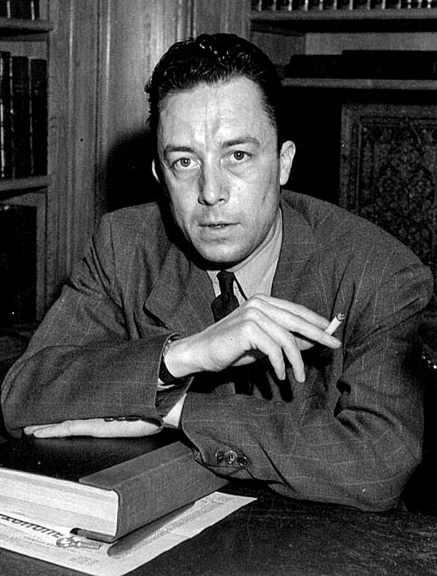

The higher we soar, the smaller we appear to those who cannot fly.
There is always some madness in love. But there is also always some reason in madness.
He who has a why to live can bear almost any how.
Man is something that shall be overcome. What have you done to overcome him?
You say you believe in Zarathustra? But what matters Zarathustra? You are my believers, but what matter all believers?
You had not yet sought yourselves: then did you find me. So do all believers: therefore all belief is of so little account.
Now I bid you lose me and find yourselves; and only when you have all denied me will I return to you.
The free man is a warrior.
What is good? All that heightens the feeling of power, the will to power, power itself in man.
What is bad? All that proceeds from weakness.
The weak and ill-constituted shall perish: first principle of our philanthropy.
And one shall help them to do so.
What is more harmful than any vice? Active sympathy for the ill-constituted and weak.
To demand of strength that it should not express itself as strength, that it should not be a will to overpower, a will to dominate, a will to become master—a demand of life that it should suppress its most essential conditions.
Life itself is the will to power: self-preservation is only one of the indirect and most frequent results.
He who cannot obey himself will be commanded.
The noble soul has reverence for itself.
I teach you the overman. Man is something that shall be overcome.
What have you done to overcome him?
All beings so far have created something beyond themselves: and you want to be the ebb of that great tide, and rather go back to the beast than overcome man?
What is the greatest thing you can experience? It is the hour of great contempt.
The hour in which even your happiness becomes loathsome to you, and so also your reason and your virtue.
The hour in which you say: "What good is my happiness? It is poverty and filth, and a miserable ease."
Man is a rope, fastened between animal and overman—a rope over an abyss.
A dangerous crossing, a dangerous wayfaring, a dangerous looking-back, a dangerous trembling and halting.
What is great in man is that he is a bridge and not a goal.
What is lovable in man is that he is an over-going and a down-going.
The struggle itself toward the heights is enough to fill a man’s heart.
One must imagine Sisyphus happy.
There is no fate that cannot be surmounted by scorn.
At any street corner, the feeling of absurdity can strike any man in the face.
Autumn is a second spring when every leaf is a flower.
The only way to deal with an unfree world is to become so absolutely free that your very existence is an act of rebellion.
Seeking what is true is not seeking what is desirable.
In the depth of winter, I finally learned that within me there lay an invincible summer.
Don’t walk in front of me; I may not follow.
Don’t walk behind me; I may not lead.
Walk beside me, just be my friend.
Man is the only creature who refuses to be what he is.
There is no love of life without despair of life.
To be happy, we must not be too concerned with others.
A man is more a man by the things he keeps to himself than by those he says.
Fate is not in man but around him.
Real generosity toward the future lies in giving all to the present.
I opened myself to the gentle indifference of the world.
I laid my heart open to the benign indifference of the universe.
There is scarcely any passion without struggle.
Life can be magnificent and overwhelming—that is its whole tragedy.

Should I kill myself, or have a cup of coffee?
In the depth of winter, I finally learned that within me there lay an invincible summer.
Nobody realizes that some people expend tremendous energy merely to be normal.
Man is always prey to his truths. Once he has admitted them, he cannot free himself from them.
At the heart of all beauty lies something inhuman.
There is but one truly serious philosophical problem, and that is suicide.
Live to the point of tears.
A man without ethics is a wild beast loosed upon this world.
Without freedom, no art; art lives only on the restraints it imposes on itself.
The absurd is the essential concept and the first truth.